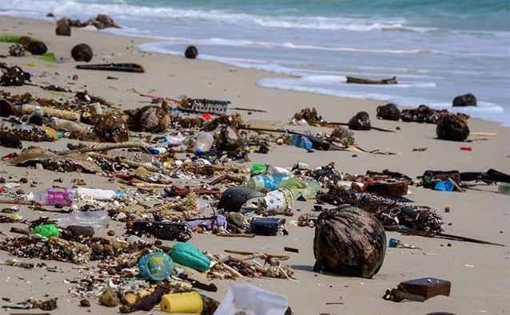

Top 10 Ways To Reduce E-Waste
Since there are numerous ways to reduce e-waste, business managers must implement waste-cutting policies. You can start with this list, then add to it with your ideas for achieving sustainability.
Jane MarshThe Harmful Effects of E-Waste to Humans
There’s a lot of waste that ends up in landfills throughout the globe. This waste has caused harmful effects on environmental and human health. To mitigate those issues, households recycle their waste or compost food scraps
 Checksammy
Checksammy
What is E-Waste and How to Manage it: Tips for E-Waste Recycling
To reduce e-waste’s environmental impact, we need to take steps to manage it properly
 Bella CariasoPhilippines among top E-Waste Producers in SEA
The Philippines was also among the top e-waste producers in Southeast Asia, based on the Global e-Waste Monitor 2024 published by the United ...
Elytus,Ltd.E-Waste & its Negative Effects on the Environment
A few questions to consider: do you still watch movies from a VCRplayer? More than likely, no. Are you purchasing the latest cell phone every time a new one is released?If you’re like almost 50 percent of...
Chemicals and Pollution Digital Cooperation E-WasteThe Growing Environmental Risks of E-Waste
E-waste, electronic waste, e-scrap and end-of-life electronics are terms often used to describe used electronics that are nearing the end of their useful life....